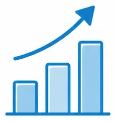
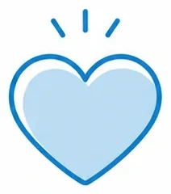
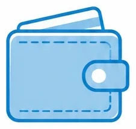
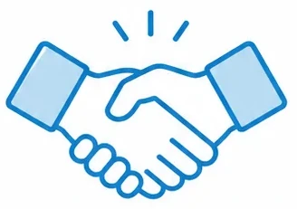
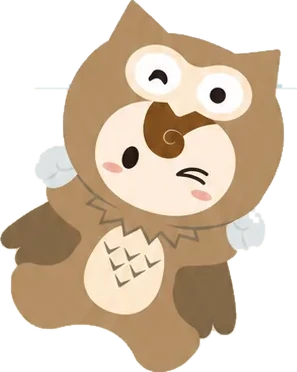
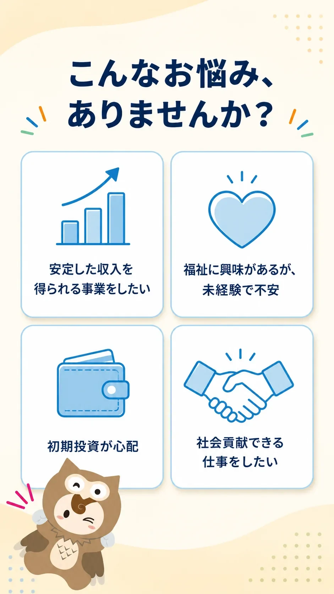
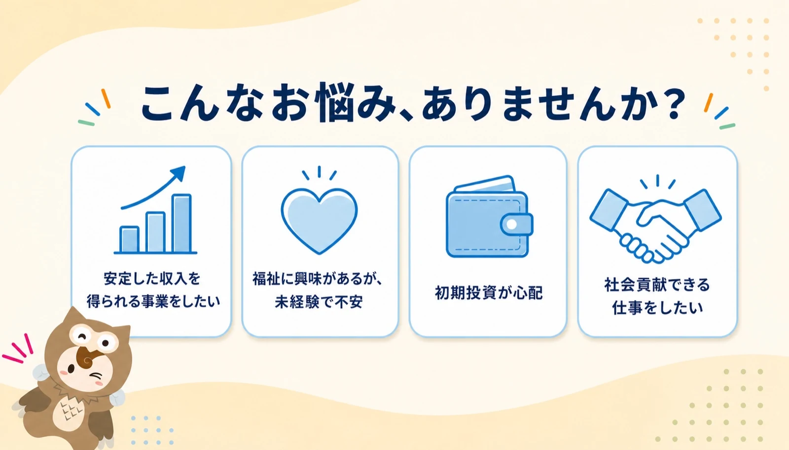

OWL「こんなお悩み、ありませんか？」— 焼き込み画像 → HTML化
50%
見てほしいところ：ブラウザの幅を変えると、860pxを境にスマホ版（2×2）とPC版（横4列）が切り替わります。
「重ねる」を選ぶと元画像を半透明で重ねられます（ズレの確認用）。
中身：見出し・カードの文字はすべてHTMLのテキスト（＝Googleが読める）。
背景（波・ドット・キラキラ）は、元画像から「文字とカードとアウル君だけを消した」ものをそのまま敷いています
（CSSでの近似をやめました）。アイコン4つとアウル君は元画像からの切り出し。
文言・数値は1文字も変えていません。
HTML版
こんなお悩み、ありませんか？
-

安定した収入を得られる事業をしたい
-

福祉に興味があるが、未経験で不安
-

初期投資が心配
-

社会貢献できる仕事をしたい



元画像との突合（機械測定）：
カード4枚・見出し・アウル君の位置はスマホ／PCとも元画像と一致。背景の色は元画像との差が最大3/255。
320〜1920pxの13幅で横スクロール0px・本文2行を維持。
アウル君とカードの文字の重なりは画素レベルで0（元画像も0）。